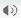

<!DOCTYPE html PUBLIC "-//W3C//DTD XHTML 1.0 Transitional//EN" "http://www.w3.org/TR/xhtml1/DTD/xhtml1-transitional.dtd">
<html xmlns="http://www.w3.org/1999/xhtml">
<head>
<meta http-equiv="Content-Type" content="text/html; charset=euc-kr" />
<title>⊙ 한국식품영양재단 ⊙</title>
<style type="text/css">
<!--
#Layer1 {
	position:absolute;
	left:43px;
	top:103px;
	width:512px;
	height:463;
	z-index:3;
}
#Layer2 {
	position:absolute;
	left:303px;
	top:20px;
	width:320;
	height:110;
	z-index:2;
}
.time {color: #FFFFFF; font-family:Arial, Helvetica, sans-serif; font-size:11px;
}
-->
</style>
		<script language=javascript src="../../video_player.js"></script>
		<script language=javascript src="../../Embed.js"></script>
		<script language=javascript src="../../activeXPlay.js"></script>

 

 

 
 <script language=VBScript>

 

 dim state

 

 state = 1

 

 sub default_onClick

 

              self.status = ""

 

              if state =1 then

 

                            Player1.DisplaySize = 0

 

              end if

 

 end sub

 

  

 

 sub double_onClick

 

              self.status = ""

 

              if state =1 then

 

                            Player1.DisplaySize = 2

 

              end if

 

 end sub

 

 sub full_onClick

 

              self.status = ""

 

              if state =1 then

 

                            Player1.DisplaySize = 3

 

              end if

 

 end sub

 

 </script>

 

 

 <script type="text/JavaScript">

 <!--

 function MM_swapImgRestore() { //v3.0

   var i,x,a=document.MM_sr; for(i=0;a&&i<a.length&&(x=a[i])&&x.oSrc;i++) x.src=x.oSrc;

 }

 

 function MM_preloadImages() { //v3.0

   var d=document; if(d.images){ if(!d.MM_p) d.MM_p=new Array();

     var i,j=d.MM_p.length,a=MM_preloadImages.arguments; for(i=0; i<a.length; i++)

     if (a[i].indexOf("#")!=0){ d.MM_p[j]=new Image; d.MM_p[j++].src=a[i];}}

 }

 

 function MM_findObj(n, d) { //v4.01

   var p,i,x;  if(!d) d=document; if((p=n.indexOf("?"))>0&&parent.frames.length) {

     d=parent.frames[n.substring(p+1)].document; n=n.substring(0,p);}

   if(!(x=d[n])&&d.all) x=d.all[n]; for (i=0;!x&&i<d.forms.length;i++) x=d.forms[i][n];

   for(i=0;!x&&d.layers&&i<d.layers.length;i++) x=MM_findObj(n,d.layers[i].document);

   if(!x && d.getElementById) x=d.getElementById(n); return x;

 }

 

 function MM_swapImage() { //v3.0

   var i,j=0,x,a=MM_swapImage.arguments; document.MM_sr=new Array; for(i=0;i<(a.length-2);i+=3)

    if ((x=MM_findObj(a[i]))!=null){document.MM_sr[j++]=x; if(!x.oSrc) x.oSrc=x.src; x.src=a[i+2];}

 }

 //-->

 </script>


</head>

<body onLoad="funcInit();MM_preloadImages('../img/btn_pause_r.jpg','../img/btn_full_r.jpg','../img/play_btn2_r.gif.jpg','../img/stop_btn2_r.gif','../img/pause_btn_r.gif','../img/btn_stop_r.jpg','../img/fbtn2_r.gif')"scroll="no" topmargin="0" leftmargin="0">
 

<body>
  <table width="512" height="457" border="0" cellpadding="6" cellspacing="0">
    <tr>
      <td height="100%" background="../img/media_player_bg.gif"><table width="100%" height="100%" border="0" cellpadding="0" cellspacing="0">
        <tr>
          <td width="500" height="400" valign="top" bgcolor="#999999">
		  
	   <comment id=__NSID__>
	     <object id="Player1" 

 					codebase="http://activex.microsoft.com/activex/controls/mplayer/en/nsmp2inf.cab#Version=6,4,5,715" 

 					type="application/x-oleobject" height="400" 

 					standby="Loading Microsoft® Windows Media™ Player components..." width="500" 

 					classid="CLSID:22D6F312-B0F6-11D0-94AB-0080C74C7E95" bgcolor="DarkBlue">
           <param name="transparentAtStart" value="False" />
           <param name="transparentAtStop" value="False" />
           <param name="AnimationAtStart" value="False" />
           <param name="AutoStart" value="False" />
           <param name="AutoRewind" value="False" />
           <param name="SendMouseClickEvents" value="False" />
           <param name="DisplaySize" value="0" />
           <param name="AutoSize" value="False" />
           <param name="ShowDisplay" value="False" />
           <param name="ShowStatusBar" value="False" />
           <param name="ShowControls" value="False" />
           <param name="ShowTracker" value="False" />
           <param name="DefaultFrame" value="PPTSldF" />
           <param name="FileName" value="./vod/food_03.wmv" />
           <param name="EnableContextMenu" value="0" />
           <param name="EnablePositionControls" value="1" />
           <param name="EnableFullScreenControls" value="1" />
           <param name="ShowPositionControls" value="False" />
           <param name="Mute" value="0" />
           <param name="Rate" value="1" />
           <param name="Volume" value="0" />
           <param name="ClickToPlay" value="1" />
           <param name="CursorType" value="1" />
           <embed width="500" height="400" 

 					transparentatstart="False" transparentatstop="False" animationatstart="False" 

 					autostart="False" autorewind="False" sendmouseclickevents="False" displaysize="0" 

 					autosize="False" showdisplay="False" showstatusbar="False" showcontrols="False" 

 					showtracker="False" defaultframe="PPTSldF" filename="./vod/food_03.wmv" 

 					enablecontextmenu="0" enablepositioncontrols="1" enablefullscreencontrols="1" 

 					showpositioncontrols="False" mute="0" rate="1" volume="0" clicktoplay="1" 

 					cursortype="1" src="False"> </embed>
         </object>
	   </comment>
          <script> __ws__(__NSID__); </script>		</td>
        </tr>
        <tr>
          <td height="57"><table width="100%" height="57" border="0" cellpadding="0" cellspacing="0">
            <tr>
              <td width="8%">  </td>
              <td width="7%">  </td>
              <td width="7%">  </td>
              <td width="4%" height="57"><table width="100%" height="100%" border="0" cellpadding="0" cellspacing="0">
                <tr>
                  <td>&nbsp;</td>
                </tr>
                <tr>
                  <td valign="top"><!--
				  <a href="#" onfocus="this.blur();" onclick="javascript:mute()"></a>
				  -->				  </td>
                </tr>
              </table></td>
              <td height="57"><table width="100%" height="100%" border="0" cellpadding="0" cellspacing="0">
                <tr>
                  <td><table width="100%" border="0" cellspacing="0" cellpadding="0">
                    <tr>
                      <td>&nbsp;</td>
                      <td style="padding-right:15px;" align="right" background="../img/time_bg.gif" ><div align="right"></div>
                      <div id="oL_pos" class="time"></div></td>
                    </tr>
                  </table></td>
                </tr>
                <tr>
                  <td>&nbsp;</td>
                </tr>
              </table></td>
            </tr>
          </table></td>
        </tr>
      </table></td>
    </tr>
</table>


  <div id="pTrc" 

 style="Z-INDEX: 21; LEFT: 156px; VISIBILITY: visible; WIDTH: 24px; POSITION: absolute; TOP: 438px; HEIGHT: 11px"></div>

<div id="pVol" 

 ></div>
 
 
<script language=JavaScript event="PlayStateChange(lOldState, lNewState)" for=Player1>

 	var strTemp;

 	

 	if(lNewState==0) {

 			strTemp = "정지";

 			flagCheck = 0;

 			flagPos = 0;

 	}

 	else if(lNewState==1) {

 			strTemp = "일시정지";

 			flagCheck = 0;

 			flagPos = 0;

 	}

 	else if(lNewState==2) {

 			if(flagCheck == 0) {

 				strTemp = "실행중";

 				flagPos = 1;

 				flagCheck = 0;

 				CurrentTime();

 			}

 	}

 	else if(lNewState==3)

 			strTemp = "Waiting for stream to begin.";

 	else if(lNewState==4)

 			strTemp = "Stream is scanning forward.";

 	else if(lNewState==5)

 			strTemp = "Stream is scanning in reverse.";

 	else if(lNewState==6)

 			strTemp = "Skipping to next.";

 	else if(lNewState==7)

 			strTemp = "Skipping to previous.";

 	else if(lNewState==8)

 			strTemp = "Stream is not open.";

 	

 	

 	

 </script>

 

 <script language=JavaScript event="OpenStateChange(lOldState, lNewState)" for=Player1>

 

 	var strTemp;

 	

 	flagCheck = 1;

 	

 	if(lNewState==0)

 			strTemp = ""; //"Content file is closed.";

 	else if(lNewState==1)

 			strTemp = "Loading an Advanced Stream Redirector (ASX) file.";

 	else if(lNewState==2)

 			strTemp = "Loading an .nsc station file.";

 	else if(lNewState==3)

 			strTemp = "Locating the server.";

 	else if(lNewState==4)

 			strTemp = "Connecting to the server.";

 	else if(lNewState==5)

 			strTemp = "Opening or listening for the stream.";

 	else if(lNewState==6)

 			strTemp = "버퍼링중";

 			

 	if(strTemp) {

 //		document.all("oL_state").innerHTML = "<font style='font-size:9pt;' color=#FFFFFF>" + strTemp + "</font>";

 	}

 	

 //* message Process End		*//

 </script>

 <!--  여기까지가 미디어파일의 실행 상태등을 출력해주는 함수 였습니다. --><!-- 여기서부터 동영상/슬라이드 싱크 및 제어에 관한 스크립트 --><!--

 ********************************************************************************************************************************************** 여기서부터

 -->

 <script language=JavaScript>

 

 

 flagPos = 0;

 flagCheck = 0;

 

 function CurrentTime()

 {

 //alert("in CurrentTime()");

 	var currentPosition = Player1.CurrentPosition;

 	var totalPosition   = Player1.Duration;

 	if(flagPos == 1)

 	{

 		setTimeout("CurrentTime()", 1000)		

 		var min = currentPosition / 60;

 		min = parseInt(min);

 		var sec = currentPosition % 60;

 		sec = parseInt(sec);

 		

 		if ( 10 > min) min="0" + min;  // 현재 시작 시간 : 분

 		if ( 10 > sec) sec="0" + sec;  // 현재 시작 시간 : 초	

 		

 		var currePos = min + ":" + sec;

 		

 		min = totalPosition / 60;

 		min = parseInt(min);

 		//alert(min);

 		if ( 10 > min) min="0" + min;  // 현재 시작 시간 : 

 		

 		sec = totalPosition % 60;

 		sec = parseInt(sec);

 		//alert(sec);

 		if ( 10 > sec) sec="0" + sec;		

 

 		if(sec < 0)

 			document.all("oL_pos").innerHTML = currePos;

 		else {

 			var totalPos = min + ":" + sec;

 			document.all("oL_pos").innerHTML = "<font style= color=#000000>" + currePos + "</font>" +" " +":"+" "+"<font style= color=#828282>" + totalPos+"</font>" ;

 		}

 	}

 }

 </script>

 <script language=JavaScript event=EndOfStream for=Player1>

 

 	// 동영상이 끝났을 때..

 	//top.location.href = "close.html";

 

 </script>

 <!--

 ********************************************************************************************************************************************** 여기까지 현상태 그대로 유지!

 -->

 <script language=JavaScript>

 //인덱스 및 음성강의듣기 버튼에 대한 이벤트 모음

 var flag;

 var media1; // wma 파일의 경로를 저장할 변수

 var media2; // wmv 파일의 경로를 저장할 변수

 

 media1 = 'mms://<%=BASE_URL%>/SA0322/1/SA0322_1_1.wma?code=<%=request("code")%>'; //개발시 로컬경로를 적어주되 최종 포팅시 scu에서 지정해준 미디어서버의 경로를 씀.

 media2 = 'mms://<%=BASE_URL%>/SA0322/1/SA0322_1_1.wmv?code=<%=request("code")%>'; //개발시 로컬경로를 적어주되 최종 포팅시 scu에서 지정해준 미디어서버의 경로를 씀.

 

 sound_flag = false;

 

 

 

 //음성강의 및 동영상강의 보기를 전환해주는 함수.

 

 function playSound()

 {

 		document.Player1.Stop();

 		document.Player1.CurrentPosition=0;

 		

 		if(PageLayer.style.visibility == "visible")      //동영상강의 -> 음성강의로     

 		  {	

      		sound_flag = true;

 			document.Player1.FileName=media1; 

 			PageLayer.style.visibility = "hidden";  // 음성강의를 위해 PageLayer로 label id가 지정되어있는 부분의 style을 숨겨줌.

 			MM_swapImage('Image9','','images/wmvView.gif',1);  // 초기 버튼의 상태는 음성강의보기 버튼 이미지가 보이는 상태이며 클릭시 동영상강의를 음성강의로 전환시키는 동시에 버튼이미지를 동영상보기 버튼 이미지로 Swap시킨다.

 		  }

 		else      //음성강의 -> 동영상강의로

 		  {

     		sound_flag = false;

 			document.Player1.FileName=media2;  

 			PageLayer.style.visibility = "visible";  // 음성강의에서 동영상강의로 전환시는 모든 처리를 위의 상태와 반대로 하면 된다.

 			MM_swapImage('Image9','','images/wmaView.gif',1);

 		  }

 }

 

 // iframe 내의 슬라이드 파일 초기화

 function currentSlide(){

 	var cslide; // 미디어파일의 현재 마커가 저장될 변수

 	cslide = document.Player1.CurrentMarker; //현재 마커를 저장

 	if (cslide==0) { // 마커의 값이 0이면 아래 부분 처리, 아니면 그냥 빠져나간다.

 		document.Player1.CurrentPosition=0;  // 0일경우 미디어파일을 처음부터 시작하게 제어한다.

 		document.movieSlide.src = 'slide/main1_.html'; // iframe의 name/id는 movieSlide로 지정되어있다. iframe에 삽입될 파일을 지정(최초 오픈시 한번만 수행)

 		}

 	}

 

 </script>

 

 <script>

 /* 이부분의 스크립트는 신경쓰지 마세요.*/

 /*function sound_over()

 {

 	if(sound_flag == false)

 		MM_swapImage('Image12','','.././img/m_v_01.gif',1);

 }

 

 function sound_out()

 {

 	if(sound_flag == false)

 	    MM_swapImgRestore();

 }

 */

 

 function cntSlide(){

 var slTot;

 slTot=Player1.MarkerCount;

 	

 	document.all("sl_cnt").innerHTML = "<font style='font-size:9pt;' color=#333333>" + 'Page ' + current_page_count +' / Total ' + slTot +  "</font>";

 }

 

 </script>

 <!-- 미디어파일에 삽입해놓은 Script Command(마커라고 생각하시면 됩니다.)에 의해 값을 넘겨 받아 슬라이드 부분을 제어하는 스크립트 -->

 <script language=JavaScript event="ScriptCommand(TypeOfCommand, anyParam)" 

 for=Player1>

 <!--

 if (TypeOfCommand == "aURL")

 {	

 	

 	if(anyParam == "slide0") //미디어파일에서 넘겨주는 Script Command의 값은 문자로 되어있으며 그 값은 slide0, slide1... 의 형식으로 넘어오게 됩니다.

 	{

 		current_page_count = 1;  // current_page_count 변수는 현재 슬라이드의 페이지 번호를 담고 있는 변수 입니다. 이 값이 1이라면 맨처음 슬라이드를 iframe에 삽입하면 되는것입니다.

 		movieSlide.document.location.href = "./slide/main1_" + current_page_count + ".html";  //현재는 slide3까지 제작되있는 샘플이지만 앞으로 제작하게될 컨텐츠에는 고정된 슬라이드수가 있는것이 아니니 컨텐츠프레임의 갯수에 맞춰 아래 스크립트를 

 		cntSlide();																					   //추가 및 삭제를 해주시면 됩니다.  	

 

 	}

 	else if(anyParam == "slide1")

 	{

 		current_page_count = 2;

 		movieSlide.document.location.href = "./slide/main1_" + current_page_count + ".html";

 		cntSlide();

 	}

 	else if(anyParam == "slide2")

 	{

 		current_page_count = 3;

 		movieSlide.document.location.href = "./slide/main1_" + current_page_count + ".html";;

 		cntSlide();

 	}

 	else if(anyParam == "slide3")

 	{

 		current_page_count = 4;

 		movieSlide.document.location.href = "./slide/main1_" + current_page_count + ".html";;

 		cntSlide();

 	}

 		else if(anyParam == "slide4")

 	{

 		current_page_count = 5;

 		movieSlide.document.location.href = "./slide/main1_" + current_page_count + ".html";;

 		cntSlide();

 	}

 	else if(anyParam == "slide5")

 	{

 		current_page_count = 6;

 		movieSlide.document.location.href = "./slide/main1_" + current_page_count + ".html";;

 		cntSlide();

 	}

 	else if(anyParam == "slide6")

 	{

 		current_page_count = 7;

 		movieSlide.document.location.href = "./slide/main1_" + current_page_count + ".html";;

 		cntSlide();

 	}

 	else if(anyParam == "slide7")

 	{

 		current_page_count = 8;

 		movieSlide.document.location.href = "./slide/main1_" + current_page_count + ".html";;

 		cntSlide();

 	}

 	else if(anyParam == "slide8")

 	{

 		current_page_count = 9;

 		movieSlide.document.location.href = "./slide/main1_" + current_page_count + ".html";;

 		cntSlide();

 	}

 	else if(anyParam == "slide9")

 	{

 		current_page_count = 10;

 		movieSlide.document.location.href = "./slide/main1_" + current_page_count + ".html";;

 		cntSlide();

 	}

 	else if(anyParam == "slide10")

 	{

 		current_page_count = 11;

 		movieSlide.document.location.href = "./slide/main1_" + current_page_count + ".html";;

 		cntSlide();

 	}

 	else if(anyParam == "slide11")

 	{

 		current_page_count = 12;

 		movieSlide.document.location.href = "./slide/main1_" + current_page_count + ".html";;

 		cntSlide();

 	}

 	else if(anyParam == "slide12")

 	{

 		current_page_count = 13;

 		movieSlide.document.location.href = "./slide/main1_" + current_page_count + ".html";;

 		cntSlide();

 	}

 	else if(anyParam == "slide13")

 	{

 		current_page_count = 14;

 		movieSlide.document.location.href = "./slide/main1_" + current_page_count + ".html";;

 		cntSlide();

 	}

 	else if(anyParam == "slide14")

 	{

 		current_page_count = 15;

 		movieSlide.document.location.href = "./slide/main1_" + current_page_count + ".html";;

 		cntSlide();

 	}

 	else if(anyParam == "slide15")

 	{

 		current_page_count = 16;

 		movieSlide.document.location.href = "./slide/main1_" + current_page_count + ".html";;

 		cntSlide();

 	}

 	else if(anyParam == "slide16")

 	{

 		current_page_count = 17;

 		movieSlide.document.location.href = "./slide/main1_" + current_page_count + ".html";;

 		cntSlide();

 	}

 	else if(anyParam == "slide17")

 	{

 		current_page_count = 18;

 		movieSlide.document.location.href = "./slide/main1_" + current_page_count + ".html";;

 		cntSlide();

 	}

 	else if(anyParam == "slide19")

 	{

 		current_page_count = 20;

 		movieSlide.document.location.href = "./slide/main1_" + current_page_count + ".html";;

 		cntSlide();

 	}

 }

 -->

 

 </script>

 

 <script language=JavaScript>

 

 var current_page_count = 0; //슬라이드의 현재 순서를 숫자로 기억할 변수.  슬라이드는 이 변수에 의해 모든 제어가 가능해진다.

 

 

 <!--

 function MM_reloadPage(init) {  //reloads the window if Nav4 resized

   if (init==true) with (navigator) {if ((appName=="Netscape")&&(parseInt(appVersion)==4)) {

     document.MM_pgW=innerWidth; document.MM_pgH=innerHeight; onresize=MM_reloadPage; }}

   else if (innerWidth!=document.MM_pgW || innerHeight!=document.MM_pgH) location.reload();

 }

 MM_reloadPage(true);

 // -->

 </script>

 

 <script language=javascript>

 

 // 슬라이드 하단의 넥스트 버튼을 눌렀을때 호출되는 함수

 function next()

 {

 	current_page_count = current_page_count + 1;		

 	if(current_page_count  > Player1.MarkerCount)

 	{

 		alert("마지막 내용입니다");

 		current_page_count = current_page_count - 1;

 		cntSlide();

 	}

 	else

 	{	

 		movieSlide.document.location.href = "./slide/main1_" + current_page_count + ".html";

 		cntSlide();

 	}

 }

 

 // 슬라이드 하단 백버튼을 눌렀을때 호출되는 함수

 function back()

 {

 	current_page_count = current_page_count - 1 ;

 	if (current_page_count  < 1)

 	{

 		top.location.href = "intro.html";

 	}

 	else

 	{

 		movieSlide.document.location.href = "./slide/main1_" + current_page_count + ".html";

 		cntSlide();

 	}

 }

 

 //슬라이드와 동영상 싱크를 맞춰주는 함수.

 function sync()

 	{

 	current_page_count = Player1.CurrentMarker;	  //  슬라이드 페이지 제어시 쓰이는 변수인 current_page_count에 재생되고 있는 미디어 플레이어의 현재 마커값을 저장

 	movieSlide.document.location.href = "./slide/main1_" + current_page_count + ".html";   //  current_page_count 값에 해당하는(현재 재생되고 있는 미디어파일의 마커부분) 슬라이드로 점핑

 	cntSlide();

 	}

 

 function stop_movie()

 	{

   	Player1.Stop(); 

   	Player1.CurrentPosition = 0; 

 	}

 

 function pause_movie()

 	{

 	Player1.Pause();

 	}

 

 function play_movie()

 	{

 	Player1.Play();

 	CurrentTime();

 	}

 

 

 // 동영상 하단의 다음버튼 (슬라이드가 아닙니다. ^^) 클릭시 다음 마커로 이동

 function next_movie()

 {

 

 	if(Player1.CurrentMarker == Player1.MarkerCount)

 	{

 		current_page_count = current_page_count-1; 

 		alert('마지막 내용입니다.');

 		return;

 	}

 	Player1.CurrentMarker  = Player1.CurrentMarker + 1 ;

 }

 

 

 function prev_movie()

 {

 	

 

 	current_page_count = current_page_count - 1;

 	if(Player1.CurrentMarker == 1)

 	{

 		current_page_count = 1;

 		alert('첫번째 내용입니다.');

 		return;

 	}

 	

 	Player1.CurrentMarker  = Player1.CurrentMarker - 1 ;

 	alert(Player1.CurrentMarker);

 }

 

 function studyIndex(a) {

 	var a;

 

 			Player1.CurrentMarker  = a ;

 			Player1.Play();

 	

 		

 }

 

 </script>


</body>
</html>
